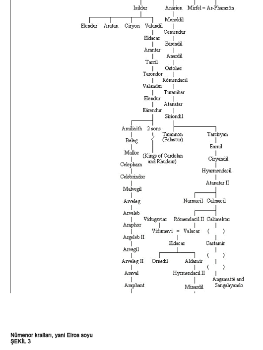

Notlar:
◊ Arnor, ya da Kuzey Krallığı, Elendil tarafından kurulmuştu. Ama Sauron tarafından öldürülmesinin ardından bu krallığın başına oğlu Isildur geçti. Ama onun ve üç oğlunun Ferah Çayırlar'da orklar tarafından katledilmesinin ardından en küçük oğul Valandil Arnor'un üçüncü kralı olacaktı. 10. kral Eärendur'un ölümünün ardından krallık oğulları arasında bölündü : Cardolan, Rhudaur ve Arthedain. Aralarında en önemlisi ve en uzun yaşayanı Amlaith'in ilk kralı olduğu Arthedain Krallığı olacaktı. Gondor Kralı Ondoher'in kızı Firiel ile evlenen Arvedui, 15. ve son Arthedain Kralı oldu, krallığı Büyücü-kralın egemenliği altına girerek yok olacaktı. Oğlu Aranarth, ilk 'Kuzey Dünedain'inin Reisi' oldu; soyları bu unvanla kesintiye uğramadan devam etti.
◊ Gondor, ya da Güney Krallığı, Elendil'in oğulları Anárion ve Isildur tarafından kuruldu. Anarion'un ölümünün ardından oğlu Meneldil, Gondor'un 3. kralı oldu. 12. Gondor Kralı Falastur Taronnon, donanmasının gücü sayesinde ilk Gemi Kralı olarak da anılır. Çocuğu olmayan ilk kraldı ve yerine kardeşinin oğlu Eärnil 13. kral oldu. 17. Gondor Kralı I. Narmacil, tembel ve çocuksuzdu, kardeşi Calmacil, 18. kral, oğlu II. Römendacil 19- kral olacaktı. 21. kral Eldacar'ın ardından II. Römendacil'in kardeşinin oğlu Gaspedici Castamir tahta çıktı. (Akraba Çekişmesi dönemi.) Eldacar'ın tahtı yeniden ele geçirmesinin ardından oğlu Aldamir, 23. kral oldu. 26. Gondor Kralı Telemnar ve oğulları veba salgınında ölünce kardeşinin oğlu Tarondor 27. kral oldu. 31. kral Ondoher ve iki oğlunun katledilmesinin ardından II. Eärnil, 32. kral oldu. Yerine geçen oğlu Eärnur'un evlenmeden ölüşünün ardından krallar soyu tükendi ve Gondor'u Vekilharç Hükümdarlar yönetmeye başladı
